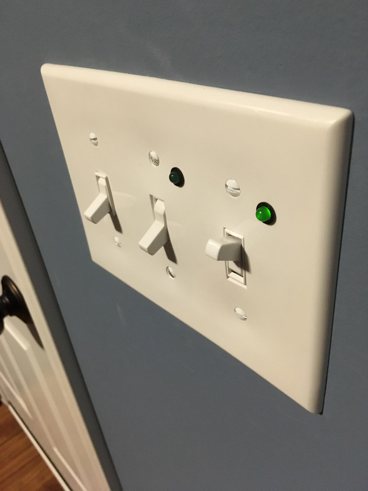

Three and Four way switch status lights
Tue 01 January 2019 by Dr. Dirk Colbry
There are two light switches in our mudroom that control the garage lights and the lights on the front of the house. Unfortunately I can not see these lights when standing next to the switches and sense there are multiple switches for each light you can not know if the lights are actually on or off. I decided to install an indicator light next to the switch to tell if the lights are on or off.
I did some web searching and there are some three way switches with "pilot" or indicator lights. However, most of these are lit when the switch is off and I wanted them to be lit when on. I also didn't really like the look of most of them.
Attempt 1 - 120v LEDs (Spoiler, this Didn't work)
I found some really cool 120V LEDs on Amazon. My thought was to wire one in series with my lights. However, once I got them and tried them out the LEDs worked fine but the outside lights didn't work at all. I slapped my head realizing that the "D" in LED stands for "diode" and I was chopping off the A/C signal.

Attempt 2 - two 120v LEDs (This didn't work either)
The obvious solution (to me) was to just use two of the 120V LEDs with going in opposite directions this way current would always be able to flow though them. That didn't work either. Not exactly sure why... my best guess is that the LEDs dropped the current or voltage in such a way that the outside lights no longer could work. To be honest I didn't spend much time debugging the problem because I came up with another solution...
Attempt 3 - Remote Current Indicator (This one worked nicely)
For my third attempt I found some Low Cost Remote Current Indicators.

What is nice about these is that they get their power though induction instead of directly being wired in. The only trick was to ensure that enough current is going through them to get the attached LEDs to work. Fortunately wrapping the wires around the doughnut increases the current.
The trick was to figure out how to get them to work properly with three way and four way switches. The three way solution is fairly strait-forward, all you need to do is wrap the wire going to the light fixture around a few times and the indicator turns on anytime the light turns on. Here are a few diagrams I quickly made to show you how it works.


I didn't realize until I had it all apart the third time that the garage ligth is a four way switch and not just a three way switch. This caused some head scratching since I could not know for sure which wires would be hot. The solution was to pass all the wires though as shown in the following figure. This only gave me one "loop" but that proved to be enough to get the LED to light up.


Anyways, fun little project and now I can tell if my lights are on. !
Using an X11 Virtual Frame Buffer to run GUI jobs in batch mode on the HPC.

Alexa Dot Holder

My brother got me an Alexa Dot for Christmas a few years ago. It turns out to be a lot of fun. We put it in the kitchen and the kids play music. My wife and I also use it to add things to our shopping list (very convenient!) Anyway …
read more3D printed Switch Guard

We recently moved into a new house and the kids are having fun running around turning on and off all the lights. Unfortunately, some of the light switches are not for lights. One goes to our garbage disposal, another goes to the gas fireplace and another turns off the furnace …
read moreEmerging Technologies (FPGAs) @ 2018 ACI-REF VR

Today is the last day of the 2018 ACI-REF Virtual residency workshop here in Norman Ok. It was a great week with a lot of great people. I highly recommend the workshop for anyone in the area of Advanced Computing Instruction especially those do some Research and Education Facilitation in …
read moreDeciding Which Technologies to Adopt, and When @ 2018 ACI-REF VR

I had fun leading a discussion on Deciding Which Technologies to Adopt, and When at the 2018 ACI-REF Virtual residency event in Norman Oklahoma. Since many of the participants were virtual I experimented with doing a Brainstorming exercise over zoom. We had local volunteers on typing in comments from our …
read moreTeams of CI Professionals: Recruitment & Retention, Management, Team-building, and Motivation Panel @ 2018 ACI-REF VR

Thank you Aaron Bergstrom (U North Dakota) for facilitating the panel discussion on Teams of CI Professionals: Recruitment & Retention, Management, Team-building, and Motivation at the 2018 ACI-REF Virtual residency. My fellow panel members included:
- Jerry Perez, U Texas Dallas
- Derek Leydig, Pennsylvania State U
- Claire Mizumoto, U California San Diego …
Leading and Listening in Complex CI Conversations @ 2018 ACI-REF VR

I just got done trying out our latest CyberAmbassador Curriculum developed specifically for the 2018 ACI-REF Virtual residency.
We had some growing pains related to getting zoom breakout rooms working with a large group of people calling in. Some didn't have working mics, others work in a group room and …
read moreProgress Update on the Development and Implementation of the Advanced CI-REF VR Program

Henry Neeman did a great job presenting our paper on Progress Update for the CI-REF VR Program at PEARC18.
Writing of this paper was truly a unique experience for me. The entire paper was written virtually over weekly video conference meetings and included the thirteen sited (maximum) authors and I …
read moreFitting iCE-Cube Neutrino Path models using Neural Networks

This summer Mohammed Salih worked with me as part of the Engineering ENSURE Program. He presented his work with Jessie Micallef and me as a poster at MidSURE.
Poster Abstract: Neutrinos are small particles with a mass close to zero. It’s rare interaction with normal matter makes it difficult …
read more